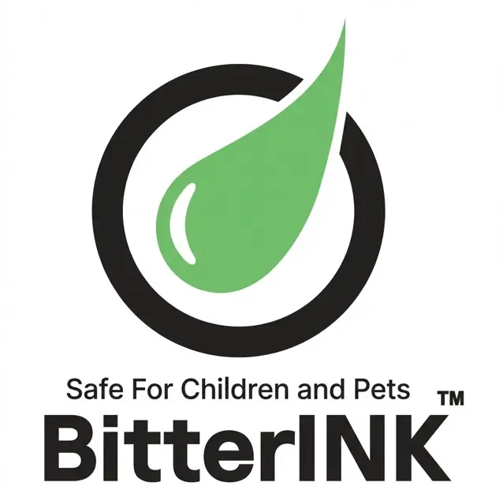
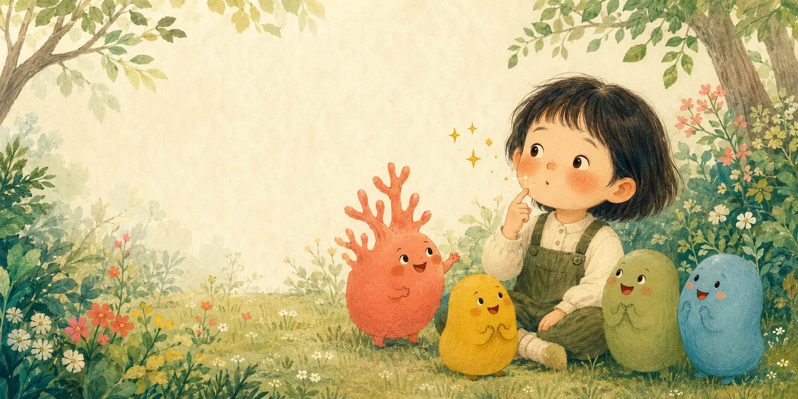
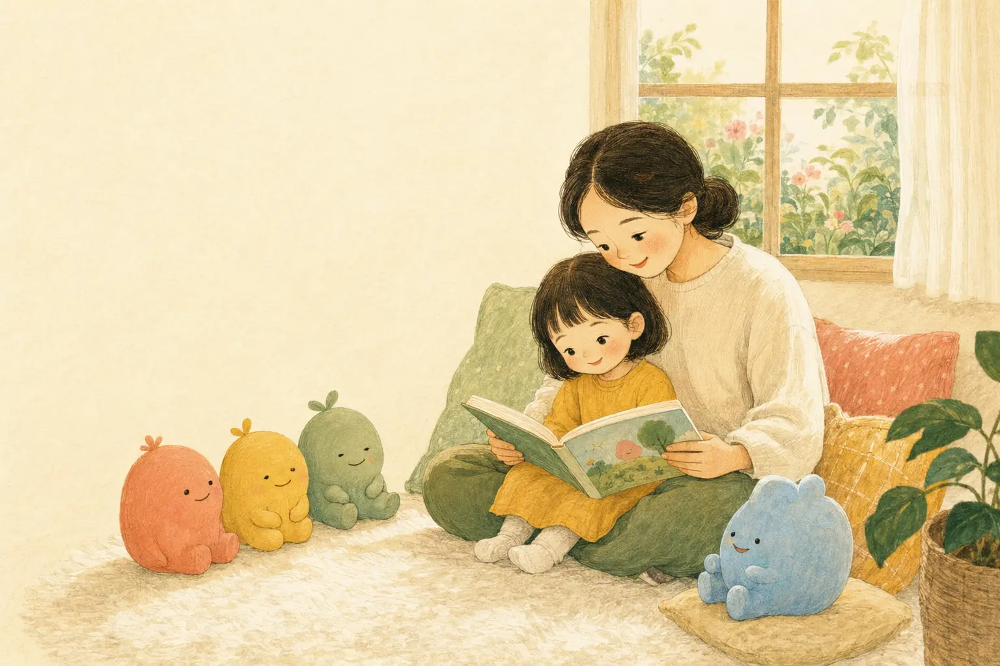
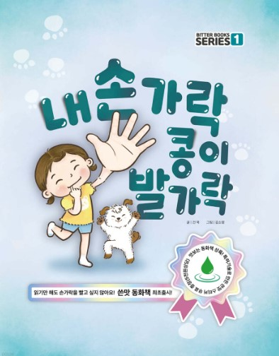
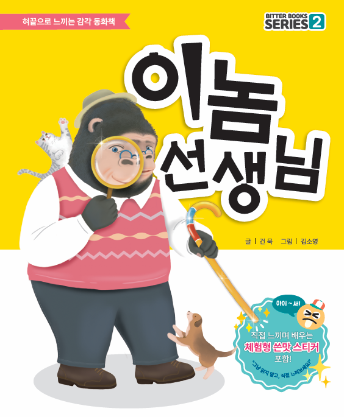

오감으로 시작하는 배움
“배움은 오감에서 시작된다”는 철학 아래, 오감을 활용한 학습 경험으로 행동과 습관을 돌아보고 성장 가능성을 넓히는 책을 만듭니다.
01 / ABOUT BITTER BOOKS
눈으로 읽고, 손끝으로 만나고,
마음속에 오래 남는 이야기
비터북스는 세계 최초로 쓴맛 잉크(BitterINK)를 적용한 교육 및 자기계발 출판 브랜드입니다.
이야기를 읽는 것에서 그치지 않고, 몸으로 느끼고 오래 기억하는 새로운 독서 경험을 제안합니다.
“배움은 오감에서 시작된다”는 철학 아래, 오감을 활용한 학습 경험으로 행동과 습관을 돌아보고 성장 가능성을 넓히는 책을 만듭니다.
아무리 훌륭한 교육도 경험이 함께하지 않으면 쉽게 잊힙니다. 비터북스는 ‘쓴맛’이라는 감각을 이야기에 더해 교육적 메시지를 직접 느끼고 오래 기억하도록 돕습니다.
비터북스의 모든 책에는 쓴맛 잉크(BitterINK)가 사용됩니다. 아이와 어른 모두가 스스로 느끼고 생각하며 새로운 행동을 시작하는 특별한 경험을 전합니다.
02 / BITTERINK TECHNOLOGY
보고, 만지고, 느끼는 책

BitterINK는 ‘쓴맛’이라는 감각 자극을 인쇄물에 접목한 독보적인 인쇄 기술입니다. 영국 Veranova의 프리미엄 쓴맛 원료를 식물성 콩기름 기반 잉크와 결합해, 단순히 읽고 보는 것을 넘어 미각을 통한 인지와 행동의 전환을 돕습니다.

쓴맛은 아이를 놀라게 하기 위한 장치가 아니라,
이야기의 메시지를 몸으로 기억하게 하는 작은 계기입니다.
대한민국 등록특허 제10-2761689호로 보호받는 쓴맛 잉크 조성물 및 인쇄 기술입니다.
Bitter Books 완구에 대해 어린이제품 공통안전기준 시험을 완료하고 KOTITI 시험성적서를 확보했습니다.
종이용 옵셋부터 UV 인쇄, 필름·스티커용 그라비아까지 용도와 소재에 맞춘 적용 기술을 개발했습니다.
PROOF & CERTIFICATION
이미지를 누르면 원본 자료를 크게 확인할 수 있습니다.
BITTERINK FAQ
질문을 누르면 짧은 답변이 열립니다.

식물성 콩기름 기반 SoyINK와 영국 Veranova의 프리미엄 쓴맛 원료를 사용하며, 어린이제품 안전 시험을 완료했습니다.
입에 살짝 닿는 체험을 고려해 설계했습니다. 먹는 제품은 아니므로 손끝이나 혀끝에 가볍게 체험해 주세요.
일부 장면에만 인쇄되며 건조 후 고정됩니다. 종이 특성에 따라 주변에서 미세한 쓴맛이 느껴질 수 있습니다.
여러 아이가 함께 읽을 때 해당 장면에 부록 스티커를 붙여 한 장씩 위생적으로 체험해 주세요.
권장 연령은 만 3세 이상입니다. 보호자와 함께 읽으며 가볍게 체험하면 더욱 좋습니다.
물기와 마찰로 쓴맛이 점차 약해질 수 있습니다. 반복 체험이 필요할 때는 함께 제공된 쓴맛 스티커를 활용해 주세요.
03 / BITTER BOOKS SERIES
비터북스의 책은 훈계보다 이야기를, 강요보다 경험을 선택합니다. 두 권의 서로 다른 감각 이야기를 만나보세요.


04 / WHERE TO BUY
06 / CONTACT US
비터북스는 아이의 경험을 더 다정하게 바꾸는 다양한 협업과 제휴를 기다립니다.
행동 교정과 교육 효과를 강화한 책, 교구, 스티커 제작
가구·전선 보호와 행동 교정을 위한 테이프 및 스티커 개발
어린이 안전을 위한 포장재 및 보호 제품 개발
05 / FOLLOW THE STORY
책이 만들어지는 순간과
다음 이야기를 가장 먼저 만나보세요.
그림책 속 장면, 제작 과정, 아이와 함께 보는 짧은 영상까지 비터북스의 새로운 소식을 SNS에서 전합니다.
그림책 제작 과정과 책 속 이야기를 만나보세요.
아이와 함께 볼 수 있는 재미있는 영상을 만나보세요.